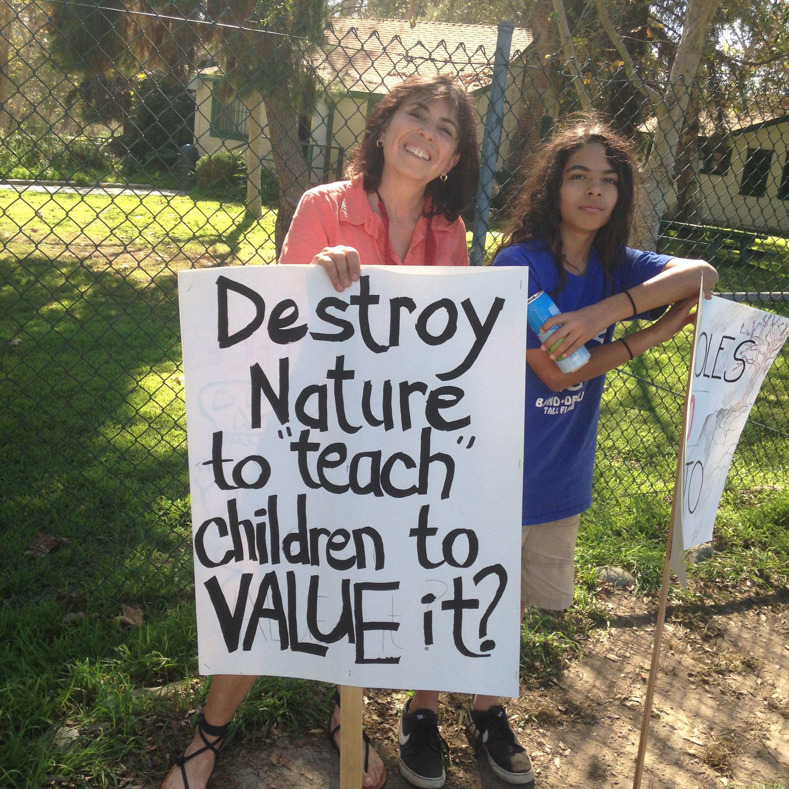
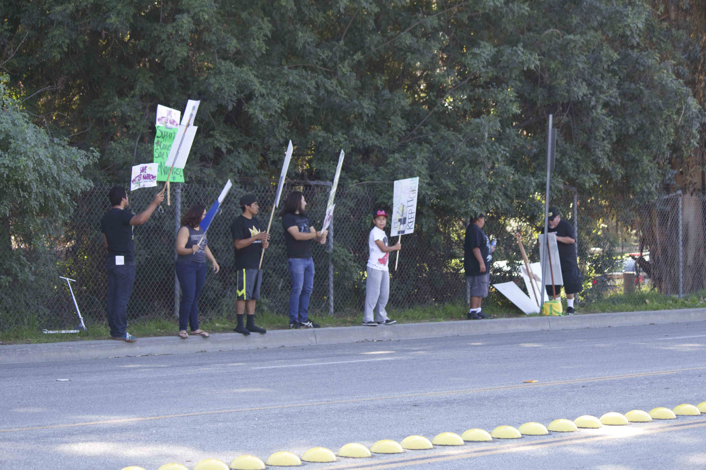
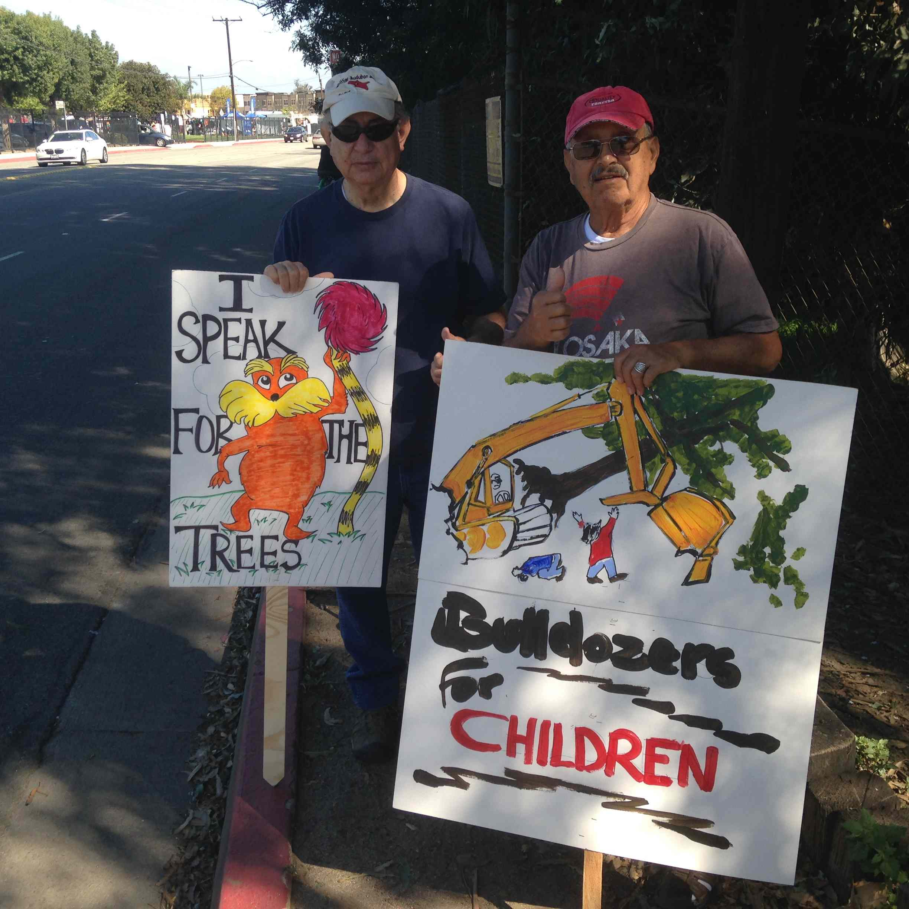
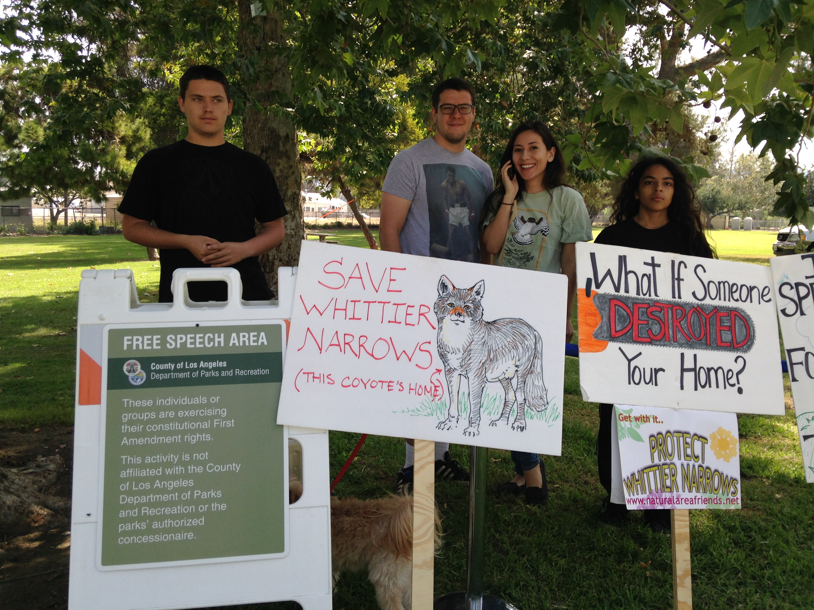
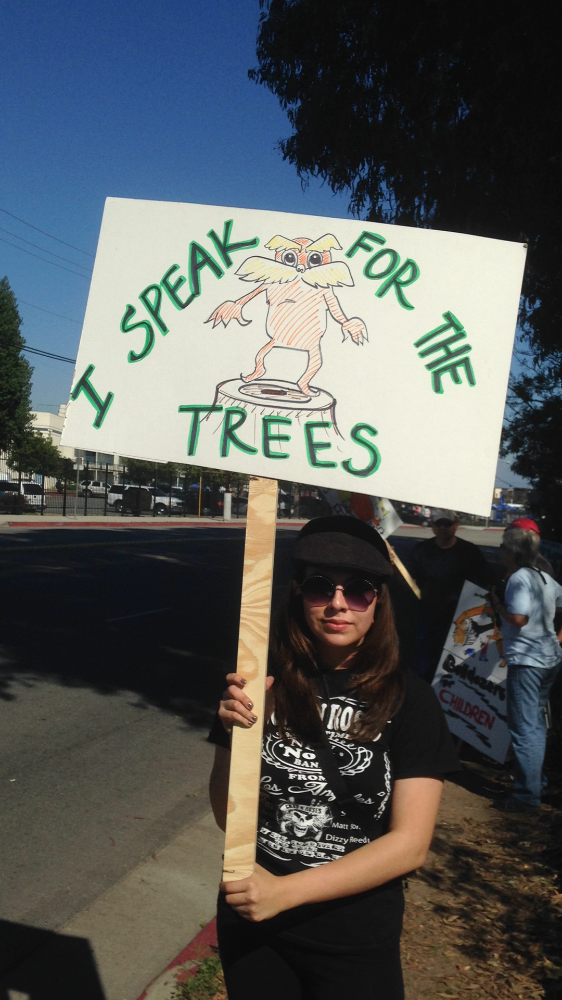
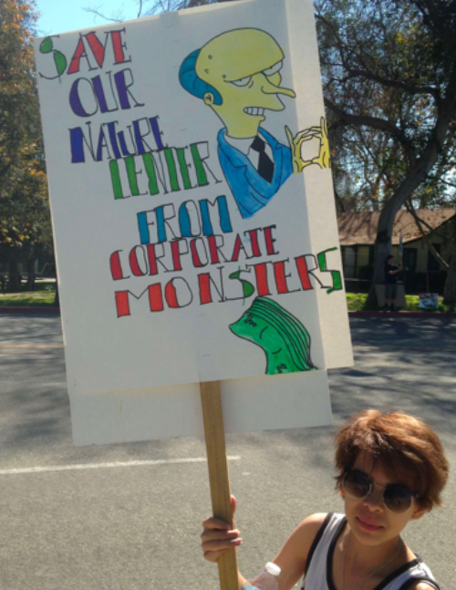
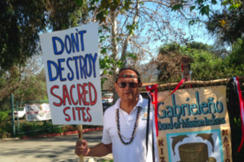
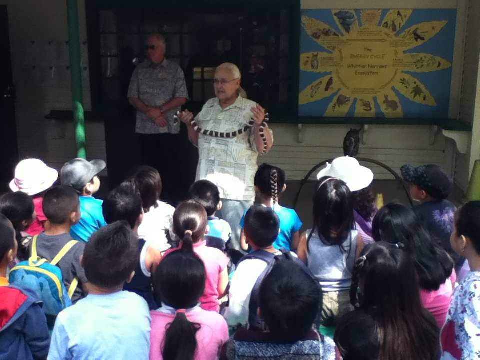

The Story: timeline of saving Whittier Narrows
My Yosemite — a quote about Whittier Narrows
My Yosemite.
— A local woman, describing Whittier Narrows
In the midst of overdeveloped Greater Los Angeles, there is a place where herons stand in still water, where coyotes move through tall grass, and where over 300 species of birds have found sanctuary. This is the story of the people who refused to let it disappear.
The Community
That Refused to Yield.
University professors, professional biologists, and SEATAC committee members who documented the ecological importance of the Natural Area and testified to its irreplaceable value.
The Gabrieлеño Band of Mission Indians Kizh Nation, whose ancestral sacred land includes Whittier Narrows, joined the fight in 2010 and brought national attention to the cause.
Young people, poets, and artists who organized art shows, poetry readings, and community picnics — turning a legal fight into a cultural movement rooted in the neighborhood.
Over 1,100 residents who signed the petition, showed up to city council meetings, and carried hand-drawn signs that said what everyone felt: Save Whittier Narrows. I Speak for the Trees.


Gallery.





